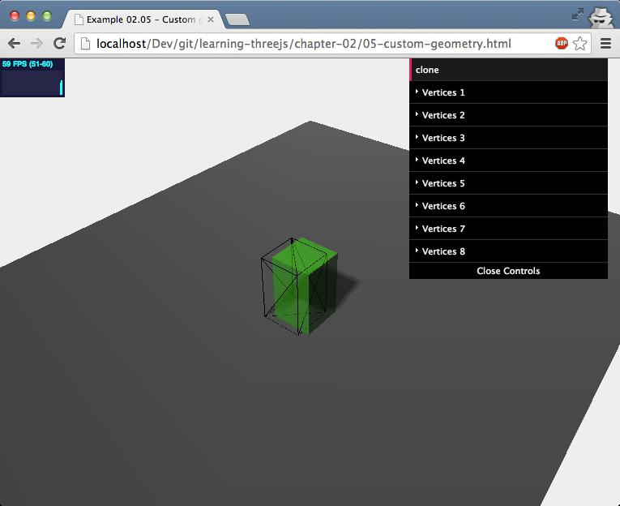
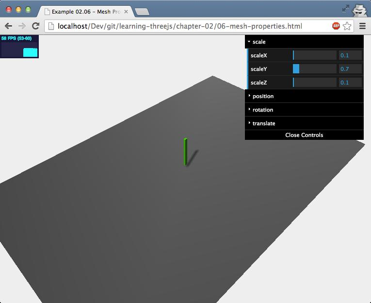
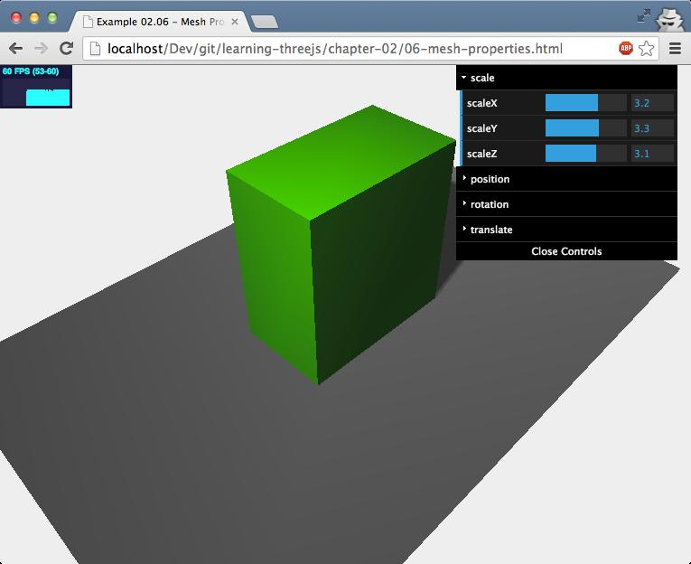

（1）网格的位置，旋转，缩放以及位移
我们已经学到，为了创建一个mesh，我们需要一个几何体，一个或多个材质。当我们有了个网格，我们可以将它添加到场景里，它就被渲染。有很多属性你可以用来改变网格在场景中显示的位置与样子。在第一个例子中，我们将看到如下属性和函数：
| 属性/函数 | 描述 |
|---|
| position | 决定对象相对于父元素的位置。通常对象的父元素是THREE.Scene()对象 | |
|---|---|---|
| rotation | 你可以用此属性设置物体随它坐标轴任意角度 | |
| scale | 此属性可以根据x,y,z坐标缩放物体比例 | |
| translateX(amount) | 将物体沿着x轴移动指定的距离 | |
| translateY(amount) | 将物体沿着y轴移动指定的距离 | |
| translateZ(amount) | 将物体沿着z轴移动指定的距离 |
我将从position属性开始。我们已经好几次都看到这个属性。所以我们快速了解它。用此属性，你可以设置物体的x,y,z坐标。它决定对象相对于父元素的位置。通常对象的父元素是你将它添加到的scene。我们有三种不同的方法来设置物体的position。坐标可以直接通过如下设置：
cube.position.x=10;
cube.position.y=3;
cube.position.z=1;
但是我们也可以同时设置所有坐标值：
cube.position.set(10,3,1);
还有第三种选择。position属性是一个THREE.Vector3对象。这意味着我们可以如下设置：
cube.postion=new THREE.Vector3(10,3,1);
在介绍mesh的其他属性前做个快速的总结。我已经提到position用来设置相对于父元素的位置。在前一章关于THREE.Geometry，我们使用了THREE.SceneUtils.createMultiMaterialObject对象来创建一个多材质的物体。我解释了这不是真正返回一个单一mesh，而是一组包含基于相同几何体对应每一种材质的网格。在我们的例子中，它包含了2个网格。如果我们改变其中一个创建出来的网格，你能清楚的看到确实有2个物体。如果我们现在移动创建出来的组，偏移量将保持一致。这两网格如下截图所示：
接下来我们来看rotation属性。你已经在先前的章节看到这个属性很多次了。有了这个属性，你可以设置物体围绕它的坐标轴的旋转角度。你可以像我们当初设置position属性那样设置rotation。正如你在数学课里学到，一个完整的旋转是2π。下面的代码块将告诉你如何配置，同样，它可以用3中不同的方式：
cube.position.set(10,3,1);
cube.rotation.set(0.5 * Math.PI, 0, 0);
cube.rotation = new THREE.Vector3(0.5 * Math.PI, 0, 0);
接下来一个我们要学的属性是我们从未提及的：scale。属性的名字就告诉你它的用处。你可以沿着特定的坐标轴缩放物体。如果你设置的scale值比1小，物体就会缩小的如下所示的样子：
当你将它的值设置的比1大，物体将会变大，如下截图：
我们在本节谈论关于mesh的最后一个功能是translate（位移）。有了translate，你可以改变物体的位置。但是和通过定义position来确定物体在哪里所不同的是，你将定义物体将要移动到那里去，相对于它现在的位置。比如：我们已经在场景里增加了一个球体，它的位置设为(1,2,3)。然后我们将用translateX(4)把物体沿着它的x轴位移。那么它现在的位置就是(5,2,3)。如果我们想要让物体回到原来的位置，我们就要使用translateX(-4)。只需要设置x，y，y轴的位移值，你就可以看到物体已经给予这3个值移动到新的位置。
本节的内容非常简单，你需要到手写一个GUI来方便控制改变物体的位置，旋转，缩放和位移。在线IDE中有本节最终的实例可供参考。